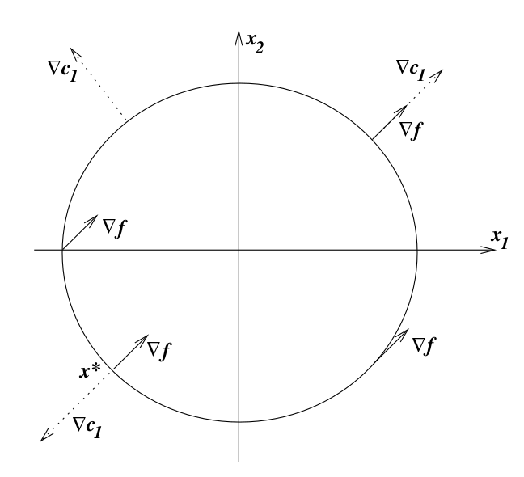

Constrained Optimization
Introduction
The general formulation of the constrained optimization problem is:
\begin{align*}
&& \min_{\bx \in \mathbb{R}^n} f(\bx)\\ \\
\text{subject to } && c_{i}(\bx) = 0 && i \in \mathcal{E} &&& \text{equality constraint}\\
&& c_{i}(\bx) \geq 0 && i \in \mathcal{I} &&& \text{inequality constraint}
\end{align*}
Where \(f\) and the functions \(c_i\) are all smooth, real valued functions on a subset of \(\mathbb{R}^n\). \(f\)
is the objective function which is to be minimized with respect to the decision variables \(\bx\). Feasible set is
the set of points (\(\bx\)'s) which satisfy all constraints and so they are candidates for the solution. The
feasible set (\(\Omega\)) is mathematically defined as:
\begin{align*}
\Omega = \{\bx \text{ } | \text{ }c_{i}(\bx) = 0, \; i\in \mathcal{E} ;\; c_{i}(\bx) \geq 0 , \; i \in
\mathcal{I}\}
\end{align*}
So we can write the objective function in short:
\begin{align}
&& \min_{\bx \in \Omega} f(\bx)
\end{align}
Here we only talk about minimizing the objective function, but all explanation given further would work perfectly
even if we talk about maximizing the objective function. An example for constraint for a 2D constrained
optimization problem is given by:
\begin{align*}
c_{1}(\bx) = -x_{1}^{2} - x_{2}^{2} +c^{2} , \;\; c_{1}(\bx) \geq 0
\end{align*}
The feasible set \(\Omega\) for this single constraint contains all the points inside the circle of radius \(c\)
including the perimeter. For multiple constraints, the feasible set will include points that satisfy all
constraints i.e. lie in the common region defined by the constraints.
Types of Solutions
The most natural thing to do now is to find the solution/s (maxima or minima), but there are different kinds of
solutions possible. Types of solutions are:
- Local Solution: A vector \(\bx^* \in \Omega\) is called a local solution (local maxima or local minima)
if the objective function value at \(\bx^*\) is lesser than any other feasible point in its neighbourhood. i.e.
\( f(\bx^*) \le f(\bx)\) for \(\bx \in \mathcal{N} \cap \Omega\)
- Strict Local Solution: A vector \(\bx^* \in \Omega\) is called a strict local solution if, for \(\bx
\in \mathcal{N} \cap \Omega\), \(f(\bx^*) < f(\bx)\), which means that the solution vector must provide the
smallest function value in its neighbourhood while still being a feasible point. The strict part is that equal
sign is not acceptable here.
- Isolated Local Solution: A vector \(\bx^* \in \Omega\) is called a isolated local solution if \(\bx^*
\in \Omega\) and there is a neighbourhood \(\mathcal{N}\) of \(\bx^*\) such that \(\bx^*\) is the only local
solution in \(\mathcal{N} \cap \Omega\). Note that isolated solutions are strict but the reverse is not true.
- Global Solution: A vector \(\bx^* \in \Omega\) is called a global solution (global maxima or local minima) if
the objective function value at \(\bx^*\) is lesser than any other feasible point in the entire feasible set.
i.e. \( f(\bx^*) \le f(\bx)\) for \(\bx \in \Omega\)
For a convex objective function, where the function and the constraints are smooth, we can prove that the global
solution is the same as the local solution. Because there is only a single extreme point.
Characteristics of the Solution
Recall, in the Unconstrained Optimization, we can derive certain conditions that guarantee the existence of a
solution. And we can determine the properties of the objective function and its first and second gradient, which
give us lot of information about the optimal points. The optimality conditions for the Unconstrained
Optimization case:
- Necessary Conditions: Local unconstrained minimizers have \(\nabla f(\bx^*) = \bze\) and \(\nabla^2
f(\bx^*) \ge \bze\) i.e. Hessian of \(f\) is positive semi-definite.
- Sufficient Conditions: Any point \(\bx^*\) at which \(\nabla f(\bx^*) = \bze\) and \(\nabla^2 f(\bx^*)
\gt \bze\) i.e. Hessian of \(f\) is positive definite, is a strong local minimizer of \(f\).
First order conditions refer to gradient equation, and the Second order conditions refer to the Hessian equation.
Similar conditions must be derived for Constrained Optimization case as well. We will do this with 2 examples, to
get a geometric viewpoint, and then state the conditions mathematically.
Definition of the Active Set \(\mathcal{A}(\bx)\)
The active set \(\mathcal{A}(\bx)\) at any feasible \(\bx\) consists of the equality constraint indices from
\(\mathcal{E}\) together with the indices of the inequality constraints \(i\) for which \(c_i(\bx) = 0\).
\begin{align*}
A(\bx)=\mathcal{E} \cup \{ i \in \mathcal{I} \hspace{0.2cm} | \hspace{0.2cm} c_{i}(\bx)=0\}
\end{align*}
At the feasible point \(\bx\), the inequality constraint \(i \in \mathcal{I}\) is said to be active if
\(c_i(\bx) = 0\) and inactive if the strict inequality \(c_i(\bx) \gt 0\) is satisfied.
Example 1: Single Equality Constraint
\begin{align*}
&\min_{\bx \in \mathbb{R}^2} && x_{1} + x_{2}\\ \\
&\text{subject to} && x_{1}^{2} + x_{2}^{2} - 2 = 0 &&\\ \\
&\text{Here }f(\bx) = x_{1} + x_{2} && \mathcal{I} = \phi \text{ , } \mathcal{E} = \{ 1 \}\\ \\
&c_1(\bx) = x_{1}^{2} + x_{2}^{2} - 2 = 0
\end{align*}
There is a single equality constraint, which means that the feasible points lie only on the perimeter of the
circle centered at origin, having radius \(\sqrt{2}\) as shown. You can imagine the contours of the function
increasing in the north-west direction, so clearly the minima of the function is at the point \(\bx^* =
[-1,-1]^T\). Remember that the gradient points in the direction of increasing function value.

Figure 1: Showing directions of constraint normal \(\nabla c_1(\bx)\) and \(\nabla f(\bx)\) for
\(\bx\) in the feasible set.
Interesting observation at the solution:
\begin{align*}
\nabla f(\bx^*) \hspace{0.2cm} || \hspace{0.2cm} \nabla c_{1}(\bx^*)
\end{align*}
Which means there exists a scalar \(\lambda_1^*\), such that
\begin{align*}
\nabla f(\bx^{*}) = \lambda_{1}^{*} \nabla c_{1}(\bx^{*})
\end{align*}
If we are to take a step \(\bs\) such that we should move closer to the solution, to retain feasibility, we must
satisfy \(c_1(\bx + \bs) = 0\). We can expand this using Taylor series, taking only first order terms:
\begin{align*}
&c_1(\bx + \bs) = c_{1}(\bx) + \nabla c_{1}(\bx)^{T} \bs = 0\\ \\
&\text{We already know that } c_{1}(\bx) = 0\\ \\
&\text{Therefore } \nabla c_{1}(\bx)^{T} \bs = 0
\end{align*}
Also, if we want to make sure the function value decreases after taking the step, so we have
\begin{align*}
f(\bx+\bs) &\lt f(\bx)
\end{align*}
\begin{align*}
f(\bx) + \nabla f(\bx)^{T} \bs &\lt f(\bx)
\end{align*}
\begin{align*}
\nabla f(\bx)^{T} \bs \lt 0
\end{align*}
So, if such a direction \(\bs\) exists, it would mean that we can move toward the minima, by choosing
a step in a
direction \(\bd\) which satisfies both these equations:
\begin{align}
\nabla c_{1}(\bx)^{T} \bd = 0 \text{ and } \nabla f(\bx)^{T} \bd \lt 0
\end{align}
On the other hand, if there is no direction \(\bd\) exist that satisfy the above 2 conditions, then \(\bx\) is
\(\bx^{*}\), the local minimizer. The only way this can happen is when \(\nabla f\) and \(\nabla c\) are parallel.
Interactive: Showing that the search direction should be perpendicular to \(\nabla c_1(\bx)\)
("grad_c(x)" in the diagram) and at an obtuse angle with \(\nabla f(\bx)\) ("grad_f(x)" in the diagram). Any
direction in the shaded region is a valid search direction. If the shaded region does not exist, then you have
the optimal point! [Slider provides different angles for "grad_c(x)"].
If, in fact \(\nabla f\) and \(\nabla c\) are not parallel, we can set:
\begin{align*}
\widetilde{\bd} = - \left( \bI - \frac{\nabla c_1 (\bx) \nabla c_1 (\bx)^T }{\| \nabla c_1 (\bx) \|^2} \right)
\text{ and } \bd = \frac{\widetilde{\bd}}{\| \widetilde{\bd} \|}
\end{align*}
By introducing the Lagrangian function
\begin{align*}
\mathcal{L}(\bx,\lambda_{1}) = f(\bx) - \lambda_{1} c_{1}(\bx)
\end{align*}
The condition for optimality can be equivalently wriiten as
\begin{align*}
\nabla \mathcal{L} = \nabla f - \lambda_{1} \nabla c_{1} = 0
\end{align*}
At the solution \(\bx^{*}\), there is a scalar \(\lambda_{1}^{*}\) such that:
\begin{align*}
\nabla_{\bx} \mathcal{L}(\bx^{*},\lambda^{*}) = 0
\end{align*}
Example 2: Single Inequality Constraint
\begin{align*}
\min_{\bx \in \mathbb{R}^2} &&& x_{1} + x_{2} &&&\\ \\
\text{subject to } &&& 2 - x_{1}^{2} - x_{2}^{2} \geq 0 &&&
\end{align*}
Now, \(c_1(\bx) = 2 - x_{1}^{2} - x_{2}^{2} \geq 0\). This is a circle is centered at origin and has radius
\(\sqrt{2}\), same as before. Here the feasible set is the interior of the circle as well as its perimeter. Again,
the solution is at the point \(\bx^* = [-1,-1]^T\). And we can notice that \(\nabla f(\bx^*) = 0.5 \nabla
c_{1}(\bx^*)\), which means \(\lambda_1^* = 0.5\).
Again, the conjecture is that \(\bx\) is not optimal if we find a small step \(\bs\) that retains feasibility and
decreases the objective function value. So, using these, we arrive at:
To ensure decrease in function value, same as before, we get:
\begin{align*}
f(\bx+\bs) &\lt f(\bx)
\end{align*}
\begin{align*}
f(\bx) + \nabla f(\bx)^{T} \bs &\lt f(\bx)
\end{align*}
\begin{align*}
\nabla f(\bx)^{T} \bs \lt 0
\end{align*}
And for ensuring the feasibility of the solution after taking the small step \(\bs\)
\begin{align*}
c_{1}(\bx+\bs) &\geq 0\\ \\
c_{1}(\bx) + \nabla c_{1}^{T}(\bx) \bs \hspace{0.2cm} &\geq 0
\end{align*}
For satisfying both these conditions, we must consider 2 cases, first, when the current point \(\bx\) is strictly
inside the circle and second, when it is on the perimeter.
Case 1: \(\bx\) is completely inside the feasible region and the strict inequality holds, i.e. \(c_1(\bx) >
0\). So any step satisfies the condition as long as it is small enough. If \(\nabla f(\bx) \neq 0\), we can set:
\begin{align*}
\bs = -\alpha \nabla f(\bx)
\end{align*}
which is the Steepest Descent Direction.
This does not work when \(\nabla f(\bx) = 0\), which means we can
not find a new step in that case. So we have reached the local minimizer \(\bx^*\).
Figure 3: Showing possible search directions for Case 1, when feasible point is inside the region and
Case 2, when the feasible point lies on the boundary.
Case 2: Consider that \(\bx\) is on the boundary of the circle, so that \(c_1(\bx) = 0\). The conditions
therefore become.
\begin{align*}
c_{1}(\bx) + \nabla c_{1}(\bx)^{T} \bs \geq 0 \text{ , } c_{1}(\bx) = 0\\ \\
\nabla c_{1}(\bx)^{T} \bs \geq 0 \text{ and } \nabla f(\bx)^{T} \bs \lt 0\\ \\
\end{align*}
The first condition defines a closed half space and the second one, an open half space. The intersection of the
regions is where we can choose a new step. And the intersection would be empty only when \(\nabla f(\bx)\) and
\(\nabla c_1(\bx)\) point in the same direction. That is \(\nabla f(\bx^*) \hspace{0.2cm} || \hspace{0.2cm} \nabla
c_{1}(\bx^*)\), so there exists \(\lambda_1\) such that
\begin{align*}
\nabla f(\bx^*) = \lambda_{1} \nabla c_{1}(\bx^*) \hspace{2cm} \lambda_{1} \geq 0
\end{align*}
Here it is important to note the sign of the multipier. Based on this the intersection of the regions defined by
both equations change.
Figure 4: A direction d that satisfies both equations \(\nabla c_{1}(\bx)^{T} \bs \geq 0\) and
\(\nabla f(\bx)^{T} \bs \lt 0\) lies in the intersection of a closed half-plane and an open half-plane.
The Optimality conditions for the inequality constraint for both the cases can hence be summarized using the
Lagrangian function as follows:
\begin{align*}
\nabla_{\bx} \mathcal{L}(\bx^*, \lambda_1^*) = 0
\end{align*}
where \(\mathcal{L}\) is defined as:
\begin{align*}
\mathcal{L}(\bx, \lambda_1) = f(\bx) - \lambda_{1} c_{1}(\bx)
\end{align*}
And we also require that:
\begin{align*}
\lambda_1^* c_1(\bx^*) = 0
\end{align*}
This is known as a Complementarity condition, which implies that the Lagrangian multiplier can be strictly
positive only when the corresponding constraint \(c_1\) is active.
The complementarity condition generalizes the first order optimality conditions for both cases.
- In Case 1, we have that \(c_1(\bx) > 0\), so from the complementarity condition, it is required that
\(\lambda_1^* = 0\). Hence \(\nabla f(\bx^*) = 0\).
- In Case 2, \(\lambda_1^* \ge 0\), which also satisfies the complementarity condition, since the constraint
\(c_1(\bx) = 0\).
First Order Necessary conditions
First Order Necessary Conditions are also called the Karush-Kuhn-Tucker conditions (KKT). The following
Theorem states these conditions.
Suppose \(\bx^{*}\) is a local solution and \(f\), \(c_{i}\) are smooth and continuously differentiable and that
the LICQ (Linearly Independent Constraint Qualification) holds at \(\bx^*\). Then there is a Lagrange multiplier
vector \(\lambda^*\), with components \(\lambda_i^*\), \(i \in \mathcal{E} \cup \mathcal{I}\) such that the
following conditions are satisfied at \((\bx^*, \lambda^*)\).
\begin{align*}
\nabla_{\bx} \mathcal{L}(\bx^{*},\lambda^{*}) = 0
\end{align*}
\begin{align*}
c_{i}(\bx) = 0 &&&\forall \text{ } i\in \mathcal{E}\\
c_{i}(\bx) \geq 0 &&&\forall \text{ } i\in \mathcal{I}\\
\lambda_{i}^{*} \geq 0 &&&\forall \text{ } i\in \mathcal{I}\\
\lambda_{i}^{*} c_{i}(\bx^{*}) = 0 &&&\forall \text{ } i\in \mathcal{E} \cup \mathcal{I}
\end{align*}
Strict Complementarity
Given a solution \(\bx^*\) and a vector \(\lambda^*\) satisfying KKT conditions, we say that the strict
complementarity condition holds if exactly one of \(\lambda_i^*\) and \(c_i(\bx^*)\) is zero for each index \(i
\in \mathcal{I}\). In other words, we have that \(\lambda_i^* > 0\) for each \(i \in \mathcal{I} \cap
\mathcal{A}(\bx)\).
Second Order Necessary Conditions
Suppose that \(\bx^*\) is a local solution of the constrained optimization problem, and that LICQ condition is
satisfied. Let \(\lambda^*\) be the Lagrange multiplier vector for which the KKT conditions are satisfied. Then
\begin{align*}
\bw^T \nabla_{\bx}^2 \mathcal{L} \bw \ge 0 \hspace{2cm} \text{ for all } \bw \in \mathcal{C}(\bx^*, \lambda^*)
\end{align*}
Where \(\mathcal{C}\) is the critical cone defined by the constraint normals.
Linear Programming
Introduction
The term "program" was used for military plans, schedules of training, and deployment of combat units. This is
far before the term was used in the computer science for referring to a set of instructions. The reason is that
Linear Program was first used to replace a set of practical planning problem in the military.
Linear programming is a technique for the optimization of a linear objective function, subject to linear
equality and linear inequality constraints. The problem definition is as follows
\begin{align*}
&& \min_{\bx \in \mathbb{R}^n} f(\bx)\\ \\
\text{subject to } && c_{i}(\bx) = 0 && i \in \mathcal{E} &&& \text{equality constraint}\\
&& c_{i}(\bx) \geq 0 && i \in \mathcal{I} &&& \text{inequality constraint}
\end{align*}
Here \(f(\bx)\) and the constraints \(c_i(\bx)\) must be linear in \(\bx\).
If we have a problem formulated this way, then we may use standard constrained optimization solvers to get the
optimal solution. I would like to explain mathematically and intuitively, the methodology of the famous
algorithm called the Revised Simplex Method.
The reason Simplex Method is interesting, is that it becomes better
than the Brute force solutions, as the problem grows bigger. The step taken is in the direction such that function
value reduces the most. This leads to reaching the minima faster than the brute force method.
Geometry of the Feasible Set
The objective function being linear in \(\bx\), leads to an interesting and simple geometry of the feasible
region. Its feasible region is a convex polytope (a geometric object with flat sides), which is a set defined as
the intersection of finitely many half spaces (one of the two regions that arise from dividing a Euclidean
n-dimensional space in two parts), each of which is defined by a linear inequality.
Example : The Nutrition Problem
The nutrition problem is a very common problem to introduce Linear Programs, though its application is hugh,
including transportation problem, planning problems, assignment problem etc. There are specialized methods to
solve some of these problems efficiently, but all of them can be formulated as a Linear Program.
The nutrition problem is posed as follows.
There are \(n\) food items, and \(m\) nutrients overall. Each food item has a cost per food item, and the
objective is to minimize the overall cost for buying different kinds of food items.
We have to ensure that atleast certain amount of nutrients should be consumed (out of the \(m\) nutrients) for a
healthy diet. These will provide us with the constraints on the quantity of food to consume as our body has some
minimum nutrient requirements.
For simplicity let \(n = 3\) and let \(m = 3\).
We have 3 food items, which are "Eggs", "Rice" and "Lentil"; and 3
nutrients, which are "Fats", "Proteins" and "Carbohydrates". The table below gives the per unit quantity of
nutrients in each unit of food item and the cost of a single unit of food item.
| Food item / Nutrients |
Fat |
Protein |
Carbohydrate |
Cost per unit of food item |
| Egg |
\(w_{11}\) |
\(w_{12}\) |
\(w_{13}\) |
\(c_{1}\) |
| Rice |
\(w_{21}\) |
\(w_{22}\) |
\(w_{23}\) |
\(c_{2}\) |
| Lentil |
\(w_{31}\) |
\(w_{32}\) |
\(w_{33}\) |
\(c_{3}\) |
| Total nutrient requirements |
\(b_{1}\) |
\(b_{2}\) |
\(b_{3}\) |
|
Now, the decision variables are \(x_1, x_2, x_3\) which represent the quantity (number of units) of each food item
we must buy, to minimize the overall cost as well as get the minimum required nutrients for a balanced diet.
The Linear Program can be written as:
\begin{align*}
\text{min } & c_1 x_1 + c_2 x_2 + c_3 x_3
\end{align*}
subject to
\begin{align*}
w_{11} x_1 + w_{12} x_2 + w_{13} x_3 &\ge b_1 \text{ for ensuring sufficient Fat}\\ \\
w_{21} x_1 + w_{22} x_2 + w_{23} x_3 &\ge b_2 \text{ for ensuring sufficient Protein}\\ \\
w_{31} x_1 + w_{32} x_2 + w_{33} x_3 &\ge b_3 \text{ for ensuring sufficient Carbohydrates}\\ \\
\text{Also } x_1, x_2, x_3 \ge 0
\end{align*}
As we will buy non-negative quantity of food items.
Generalizing for \(m, n\), and converting to matrix form, we get:
\begin{align*}
\text{min } & \bc^T \bx\\
\text{subject to } & \bA \bx \ge \bb \text{ , } \bx \geq \bze
\end{align*}
where \(\bc \in \mathbb{R}^n\), \(\bx \in \mathbb{R}^n\), \(\bb \in \mathbb{R}^m\) and \(\bA \in \mathbb{R}^{m
\times n}\).
This part is called the formulation of the Linear Program. Now we have to convert it to Standard form for solving
it using Revised Simplex Method. Or we can also solve this without any knowledge of how the algorithm works by
using software packages like PuLP with solvers like AMPL and CPLEX (you can easily find opensource solvers
online).
Standard Form
The Simplex Method requires that the problem is reduced to the following standard form before we apply the
algorithm.
\begin{align*}
\text{min } & \bc^T \bx\\
\text{subject to } & \bA \bx = \bb \text{ , } \bx \geq \bze
\end{align*}
where \(\bc \in \mathbb{R}^n\), \(\bx \in \mathbb{R}^n\), \(\bb \in \mathbb{R}^m\) and \(\bA \in \mathbb{R}^{m
\times n}\).
We must be able to convert any kind of Linear Program to this form.
Few points to keep in mind while making sure, the formulation is in Standard form.
- Here rows of \(\bA\) has the co-efficients of respective variables the constraints, and the \(\bb\) has the
right hand side constant. So we have \(m\) constraints and \(n\) variables.
- Notice that we should have equality constraints only, so slack variables or surplus variables
are used to be able to solve problems with inequality constraints.
- If any variable is free (i.e. no restriction on sign), then we must split it into 2 variables with a positive
part and a negative part, such that we get all variables non-negative.
KKT Conditions for a Linear Program
The Lagrangian function for the problem is given by:
\begin{align*}
\mathcal{L}(\bx, \lambda, \bs) = \bc^T \bx - \lambda^T (\bA \bx - \bb) - \bs^T \bx
\end{align*}
Here \(\lambda \in \mathbb{R}^m\) is the multiplier for the equality constraints and \(\bs \in \mathbb{R}^n\)
is
the
multiplier for the bounded constraints.
First order necessary conditions from theory of constrained optimization are written as follows:
\begin{align*}
\bA^T\lambda + \bs = \bc\\
\bA \bx = \bb\\
\bx \geq \bze\\
\bs \geq \bze\\
x_i s_i = 0 \text{ , i = } 1, 2, ..., n
\end{align*}
These are just the First order necessary conditions, and these are also sufficient for this particular case
because the problem is convex and there is only a single solution, which is the global solution.
The complementarity conditions essentially says that for each index \(i\), at least one of the components
\(\bx_i\) or \(\bs_i\) must be zero. This is often writen as \(\bx^T \bs = 0\), because \(\bx_i\) or \(\bs_i\) are
non-negative.
Let \((\bx^*, \lambda^*, \bs^*)\) denote the vector triple that satisfies the KKT conditions. By combining the 3
equalities, we find that,
\begin{align*}
\bc^T \bx^* = (\bA^T \lambda^* + \bs)^T \bx^* = (\bA \bx^*)^T \lambda^* = \bb^T \lambda^*
\end{align*}
And \(\bb^T \lambda^*\) is the objective function for the dual problem. This shows that the primal and the dual
objectives are equal for vector triples that satisfy KKT conditions.
It is also easy to show that KKT conditions are sufficient for finding a global minimum of the linear program. Let
\(\widetilde{\bx}\) be any other feasible point, so that \(\bA \widetilde{\bx} = \bb\) and \(\widetilde{\bx} \ge
\bze\). Then
\begin{align*}
\bc^T \widetilde{\bx} = (\bA^T \lambda^* + \bs)^T \widetilde{\bx} = \bb^T \lambda + \bs^T \widetilde{\bx} \ge
\bb^T \lambda^* = \bc^T \bx^*
\end{align*}
The result follows trivially from \(\widetilde{\bx} \ge \bze\) and \(\bs \ge \bze\). This inequality tells us that
no other feasible point can have objective value lower than \(\bc^T \bx^*\). We can even say that the feasible
point \(\widetilde{\bx}\) is optimal if and only if.
\begin{align*}
\bs^T \widetilde{\bx} = 0
\end{align*}
Since otherwise the inequality in previous equation is strict. In other words, when \(\bs_i \gt 0\), then we must
have \(\widetilde{\bx}_i = 0\) for all solutions \(\widetilde{\bx}\).
Most material presented here is from our course reference text, "Numerical Optimization", by Jorge Nocedal and
Stephen J. Wright.
Dantzig's paper on Linear Programming